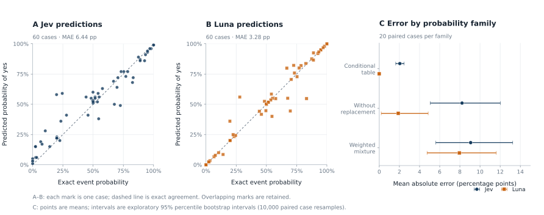
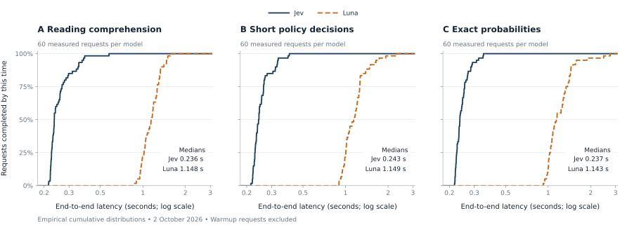
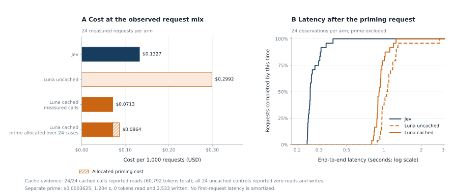

← Back to the Luna and Jev study
Supplementary measurements
The study’s earlier protocol checks, with every input, reference target, response, timing and reported charge retained.
Supplementary scope
These records document the study’s short-input and prefix-cache protocol checks. They are retained for transparency and inspection and are kept separate from the primary quality, timing and cache estimates in the study report.
The 180 short-input cases comprise 60 policy decisions, 60 BoolQ questions and 60 exact-probability problems, each sent to both models. A further 24 equipment-policy cases were sent to three cache-study arms. These account for 432 measured calls; four warmups, one cold cache prime and four setup probes bring the complete record to 441 calls.
Shared data and protocols. The 60 BoolQ rows also occur in the primary full split, some policy inputs overlap, and the synthetic task families and output contract are shared. Primary estimates use fresh recorded calls, but these datasets and designs are not independent. The supplementary observations are not pooled into the primary estimates.
1Role of these measurements
The checks exercised the common probability-of-yes answer schema, the two OpenRouter request adapters, sequential timing and billing capture, and explicit prefix caching. The tables below describe their observed outcomes and preserve the original analysis choices.
The study report provides the primary estimates and overall interpretation. This supplement supplies the earlier call-level evidence and its limitations. Original run labels, case IDs, filenames and source hashes remain unchanged so records can be reconciled with their archived artifacts.
2Measurement protocol
2.1 Models, output contract and controls
Jev was requested as typesafe/jev-1.13 and resolved to typesafe/jev-1.13-20260917 through TypeSafe. Luna was requested and returned as openai/gpt-6-luna, pinned to the OpenAI provider with fallbacks disabled. Jev used the OpenRouter Decisions endpoint; Luna used Chat Completions. Model IDs and providers were checked on every response. The API envelopes differ; the answer object is identical.1–3
{"type":"noul","noul":0.73}The number is p = P(yes); P(no) = 1 − p. A binary answer is “yes” when p ≥ 0.5. The value 0.73 above illustrates the schema.Luna used strict JSON Schema, a maximum of 128 output tokens, reasoning.effort = none and non-streaming responses. Temperature was left unspecified. All Luna responses recorded zero reasoning tokens. Jev supplied its native Noul probabilities; Luna generated numerical probabilities. Neither adapter used next-token log probabilities.
Both models received the same state, question and yes/no criteria. Luna additionally received a format instruction and schema. Case IDs, target answers and source metadata were excluded from model input. The exact instruction, schema and example requests appear in Appendix A; every recorded request is inspectable in Appendix C.
2.2 Evaluation data
| Experiment | Cases | Composition | Reference target |
|---|---|---|---|
| Simple policies | 60 | Refund, delivery and laboratory access; 20 each; 30 yes / 30 no overall | Exact Boolean rules evaluated in Python |
| BoolQ reading | 60 | Uniform sample from 3,270 validation rows; 36 yes / 24 no | Published human label |
| Exact probabilities | 60 | Conditional population tables, draws without replacement and weighted mixtures; 20 each | Exact rational event probability |
| Long policy / cache | 24 | One shared dispatch rulebook and varied records; 12 yes / 12 no | Deterministic rule oracle with independently specified expected labels |
The base seed was 20261002; the probability generator used the derived seed 20261003. Request order used the base seed. Simple policy cases were balanced within family and label, then sampled uniformly within each label. This does not exhaust all boundaries or policy branches. Exact probabilities were computed from counts with rational arithmetic and independently checked by enumeration in tests.
BoolQ rows were sampled without replacement and without filtering by labels or model outputs. The original Google Storage download returned HTTP 403, so the complete Google-owned Hugging Face validation mirror was retrieved and normalized to JSONL. The manifest records the mirror, row indices and normalized-file hash. The 60 selected passages and labels retain BoolQ’s CC BY-SA 3.0 attribution.5–7
2.3 Request schedule and timing
The short-input check shuffled cases and randomized model order within each pair. Calls were sequential over a shared persistent Python HTTPS connection to OpenRouter. Two warmup cases per model were excluded from the measured sample. Four initial setup probes were also excluded. There were no automatic retries or answer repairs.
Latency was measured with a monotonic clock immediately before connection setup/request, through receipt, JSON parsing and schema validation of the complete response. It includes network and service overhead. Payload serialization occurs before the timer. The reported value is complete-response latency; first-token timing and concurrent throughput were not measured.
Short-input Luna calls used explicit cache mode with no marked breakpoint. Every short-input Luna response reported zero cache reads and zero writes. The short-input measurement window was 08:42:23–08:46:47 UTC; the cache window was 08:49:58–08:50:56 UTC, on 2 October 2026.
2.4 Metrics and statistical analysis
Binary reference labels, y ∈ {0,1}
Brier = mean[(p − y)²]
Log loss = −mean[y ln p + (1 − y) ln(1 − p)]
Brier and log loss are lower when predictions better match labels. Probabilities are clipped to [10⁻¹⁵, 1 − 10⁻¹⁵] only for log loss.
Exact event probabilities, q ∈ [0,1]
RMSE = √mean[(p − q)²]
Expected Brier = mean[(p − q)² + q(1 − q)]
Excess Brier is mean[(p − q)²]. These targets are known probabilities, so no randomly sampled outcome replaces q.
Latency is summarized by the median, mean and linearly interpolated 95th percentile. Cost is the reported usage.cost in USD. Cost per 1,000 decisions equals measured total cost / measured requests × 1,000. It is a workload projection. Input token counts can differ because the providers use different tokenization and API overhead.
Short-input contrasts use a paired percentile bootstrap over case identities with 2,000 draws. Quality differences are Luna minus Jev; time contrasts are the ratio of Luna’s median to Jev’s median. Seeds are deterministic per task. Intervals are exploratory, with no multiple-comparison correction. They describe variation across sampled cases in this run, not repeated days or service conditions. Invalid calls would remain in success-rate and cost accounting; every measured response here was valid.
3Recorded short-input checks
3.1 Quality by task
| Task | Model | n | Accuracy / label agreement | Brier ↓ | Log loss ↓ | MAE (pp) ↓ | RMSE (pp) ↓ |
|---|---|---|---|---|---|---|---|
| Simple policies | Jev | 60 | 60/60 (100.0%) | 0.0083 | 0.0675 | — | — |
| Simple policies | Luna | 60 | 60/60 (100.0%) | 0.0000 | 0.0000 | — | — |
| BoolQ reading | Jev | 60 | 57/60 (95.0%) | 0.0684 | 0.2482 | — | — |
| BoolQ reading | Luna | 60 | 49/60 (81.7%) | 0.1676 | 3.6759 | — | — |
| Exact probabilities | Jev | 60 | — | — | — | 6.443 | 9.988 |
| Exact probabilities | Luna | 60 | — | — | — | 3.277 | 7.423 |
Both models were correct on all 60 simple policy cases. Luna’s probabilities were exactly 0 or 1 and matched the targets; Jev’s less extreme probabilities produced a nonzero Brier score despite identical binary accuracy. The all-correct result supports this sampled task set, not perfect policy reasoning generally.
Jev agreed with 95.0% of published BoolQ labels, compared with Luna’s 81.7%. The paired difference was −13.33 percentage points for Luna (95% bootstrap interval −21.67 to −5.00). This is published-label agreement: the passage audit in Section 5 found a clear label contradiction and several ambiguous items.
Luna had lower absolute error on exact probability calculations: 3.277 percentage points versus Jev’s 6.443. The paired MAE difference was −3.166 points (95% interval −5.212 to −1.114). The excess-Brier difference interval includes zero, so the evidence for a difference depends on which error metric is used.



| Model | Excess Brier | Expected Brier |
|---|---|---|
| Jev | 0.009977 | 0.156336 |
| Luna | 0.005510 | 0.151869 |
3.2 Complete-response time and reported charges



| Task | Model | Median (s) | p95 (s) | Mean (s) | Billed USD | USD / 1,000 |
|---|---|---|---|---|---|---|
| Simple policies | Jev | 0.243 | 0.331 | 0.255 | $0.001255632 | $0.020927 |
| Simple policies | Luna | 1.149 | 1.647 | 1.181 | $0.002744100 | $0.045735 |
| BoolQ reading | Jev | 0.236 | 0.372 | 0.261 | $0.001190826 | $0.019847 |
| BoolQ reading | Luna | 1.148 | 1.470 | 1.157 | $0.002669000 | $0.044483 |
| Exact probabilities | Jev | 0.237 | 0.311 | 0.247 | $0.001118670 | $0.018645 |
| Exact probabilities | Luna | 1.143 | 1.596 | 1.240 | $0.002484500 | $0.041408 |
Pooling timing and cost across the 180 measured requests per model, Jev’s median was 0.238 s and Luna’s was 1.143 s: a 4.81× ratio of medians. The measured workload cost $0.019806 per 1,000 Jev decisions and $0.043876 per 1,000 Luna decisions. Quality is reported separately by task.
3.3 Paired uncertainty
| Task | Metric | Estimate | 95% paired interval | Favours Luna |
|---|---|---|---|---|
| Simple policies | Accuracy (pp) | 0.0000 | [0.0000, 0.0000] | Positive |
| Simple policies | Brier | -0.0083 | [-0.0150, -0.0038] | Negative |
| Simple policies | Log loss | -0.0675 | [-0.0905, -0.0493] | Negative |
| Simple policies | Ratio of median times | 4.724 | [4.262, 5.046] | Below 1 |
| BoolQ reading | Accuracy (pp) | -13.3333 | [-21.6667, -5.0000] | Positive |
| BoolQ reading | Brier | 0.0993 | [0.0347, 0.1718] | Negative |
| BoolQ reading | Log loss | 3.4277 | [1.1474, 6.1487] | Negative |
| BoolQ reading | Ratio of median times | 4.862 | [4.418, 5.104] | Below 1 |
| Exact probabilities | MAE (pp) | -3.1658 | [-5.2121, -1.1139] | Negative |
| Exact probabilities | Excess Brier | -0.0045 | [-0.0113, 0.0020] | Negative |
| Exact probabilities | Expected Brier | -0.0045 | [-0.0113, 0.0020] | Negative |
| Exact probabilities | Ratio of median times | 4.815 | [4.469, 5.369] | Below 1 |
The zero-width policy accuracy interval is a consequence of resampling an all-correct sample. It does not establish zero population error. Supplementary Wilson intervals and an independent bootstrap check are included in Appendix D.
4Prefix-cache protocol check
4.1 Controlled prefix reuse
The prefix-cache protocol check used one 1,903-word fictional equipment-dispatch rulebook and 24 varied records. The three arms were Jev, uncached Luna and cached Luna. Both Luna arms used exactly the same text and message segmentation; the cached arm marked the first text block with an explicit cache breakpoint. Both used explicit cache mode, a 30-minute TTL and the same experiment-specific cache key.4
One distinct case primed the cache before the 24 measured cases. Arm order was randomized within each case. The prime reported 2,533 cache-write tokens and zero read tokens. All 24 cached calls then reported exactly 2,533 read tokens and zero writes. Every uncached control reported zero reads and writes. Jev did not expose comparable cache counters, so its cache state remains unknown.
The cached prefix accounted for 60,792 of 69,426 reported prompt tokens across measured cached calls (87.56%). Each request still generated a fresh answer. Cache hits are established from returned counters, rather than inferred from lower latency.
| Arm | Accuracy | Brier ↓ | Median (s) | p95 (s) | Billed USD | USD / 1,000 |
|---|---|---|---|---|---|---|
| Jev | 20/24 (83.3%) | 0.0879 | 0.254 | 0.337 | $0.003184104 | $0.132671 |
| Luna uncached | 21/24 (87.5%) | 0.1250 | 1.060 | 1.291 | $0.007180200 | $0.299175 |
| Luna cached | 21/24 (87.5%) | 0.1250 | 0.918 | 1.180 | $0.001711320 | $0.071305 |



4.2 Billing with and without the cold prime
The measured cached Luna calls cost $0.001711320 in total, versus $0.007180200 for uncached Luna and $0.003184104 for Jev. After priming, cached Luna was 76.17% cheaper than uncached Luna and 46.25% cheaper than Jev on this workload.
= $0.002073845 total
÷ 24 × 1,000 = $0.086410 per 1,000 decisions
With this allocation, cached Luna cost 34.87% less than Jev. The prime itself took 1.204 s; that one-off latency is excluded from the measured steady-state latency distribution.
The observed prime-plus-call model predicts cost parity with Jev after about six reused decisions: $0.000362525 + N × $0.000071305 versus N × $0.000132671. This is an extrapolation using mean observed costs and a fully successful cache, not a measured result for every reuse count. It counts an extra priming request, as this experiment did.
4.3 Speed and quality under caching
Cached Luna’s median was 0.918 s, uncached Luna’s 1.060 s and Jev’s 0.254 s. The ratio of these medians is 0.866 for cached versus uncached Luna and 3.607 for cached Luna versus Jev. The original cache summary separately reports the median of per-case ratios (0.913 and 3.618); those are different statistics.
Both Luna arms answered 21/24 correctly, and Jev answered 20/24 correctly. Cached and uncached Luna disagreed on two individual cases despite equal aggregate accuracy. Jev’s Brier score was lower in this set because its probabilities were less extreme on errors. With one answer per arm per case, this supplementary check does not isolate whether caching changed answer quality or whether generation variability explains the differences.
5Reference-label quality
A passage-only audit reviewed all 60 selected BoolQ question–passage–label triples without inspecting model predictions or scores. It began after the scored run started, following identification of a possible source-label error. It is therefore a post-hoc audit, not a preregistered filter.
A transparent post-hoc sensitivity check excluding only this contradictory row yields Jev 57/59 (96.61%) and Luna 49/59 (83.05%). No other flagged rows are excluded. Ambiguity flags do not establish that the opposite label is correct.
Cases boolq-dev-0659 and boolq-dev-0383 share the same World Cup host-qualification passage with paraphrased questions. Both remain in the frozen sample. Sampling rows does not guarantee independent topics; row-level intervals may understate uncertainty from topic dependence.
Complete passage audit — all 60 cases
| Case | Published | Assessment | Evidence / limitation |
|---|---|---|---|
| boolq-dev-0659 | yes | supported | Passage explicitly gives the host an automatic berth. |
| boolq-dev-2774 | no | ambiguous | Source describes a proposed acquisition followed by acquisition of stores; its last sentence can be read as acquisition of Rite Aid itself. Company ownership versus store ownership and the 2017 time frame need care. |
| boolq-dev-0579 | yes | supported | Passage says males and females are almost identical, while acknowledging male size differs. |
| boolq-dev-2217 | no | supported | SWIFT is used in addition to BSB for international transfers; they are distinct identifiers. |
| boolq-dev-1517 | no | ambiguous | Passage says the 2018 tournament took place in Russia. No is defensible for all World Cups across history, while yes is natural for all matches in the 2018 tournament. The question does not identify its time scope. |
| boolq-dev-1662 | yes | supported | Passage explicitly says the injury can occur on lesser toes. |
| boolq-dev-2868 | no | time or scope | Passage explicitly says no permit is required for open handgun carry in North Carolina. This is passage-era legal text; no current-law verification was performed. |
| boolq-dev-1447 | yes | supported | A virtual image is described as formed yet unable to be projected onto a screen. |
| boolq-dev-0383 | yes | supported | Passage explicitly gives the host an automatic berth. It repeats the passage in case 0659 with a paraphrased question. |
| boolq-dev-2665 | no | supported | The town name is explicitly described as fictional; the real place mentioned is a different bay/inlet. |
| boolq-dev-2041 | no | supported | The passage defines an unlisted public company as a public company not listed on any exchange. |
| boolq-dev-1296 | no | ambiguous | Passage describes the history of rainforest being called jungle and a broad definition of jungle; it does not directly settle equivalence. The no label is plausible under a strict distinction, but the passage also supports colloquial overlap. |
| boolq-dev-1114 | yes | supported | Passage explicitly calls gray wolf also known as timber wolf. |
| boolq-dev-1953 | no | supported | Passage lists three main Australian time zones and different external-territory zones. |
| boolq-dev-2493 | yes | time or scope | Passage supports any-person arrest in England and Wales. That supports an existential reading of in the UK, but does not establish every UK jurisdiction or current eligibility conditions. |
| boolq-dev-3009 | yes | time or scope | Passage explicitly says service is offered 24 hours daily, while some routes are part-time. It is a source-era system-wide statement, not a guarantee for every route or current service. |
| boolq-dev-2504 | no | supported | Passage says Ian McKellen was offered the role and turned it down, while identifying him as Gandalf. The intended role is supplied by the question. |
| boolq-dev-3125 | yes | supported | Passage identifies an optical phenomenon called an upside-down rainbow, while distinguishing it physically from rainbows. |
| boolq-dev-1092 | no | supported | Passage lists the six New England states and describes New York as a bordering state. |
| boolq-dev-0055 | no | ambiguous | Passage describes kissing and mutual feelings in season 3 but a final choice of Stefan. Get together could mean a romantic encounter or becoming a couple; the no label uses the latter sense. |
| boolq-dev-2791 | no | supported | Manhattan is listed as one of five constituent boroughs of New York City. |
| boolq-dev-1842 | yes | contradiction | Published label is yes, but the passage explicitly describes carbon as nonmetallic. Under the ordinary meaning of the question, passage-supported answer is no. |
| boolq-dev-2951 | yes | supported | Passage gives explicit style guidance allowing actor for both women and men. |
| boolq-dev-0852 | no | ambiguous | Only passage: the Gold Award is often compared to Eagle Scout. This does not state eligibility rules, whether a person can join both organizations, or the relevant date. It cannot establish the no label by itself. |
| boolq-dev-1171 | no | time or scope | Passage treats Turkey and the EU as separate partners with a common border and customs union; the no label is consistent with that source-era reading. Present membership was not checked. |
| boolq-dev-1550 | no | supported | Passage explicitly says the relevant part of the Ring of Fire excludes Australia. |
| boolq-dev-2116 | yes | supported | Passage explicitly states that Father's Day is celebrated in the Netherlands. |
| boolq-dev-0341 | no | supported | Passage explicitly says sound speed varies by substance and provides different values. |
| boolq-dev-2098 | yes | supported | Passage includes siblings-in-law among relations connected by marriage. |
| boolq-dev-2597 | yes | supported | Passage identifies Hellmann's and Best Foods as names for the same product line. The yes label follows the intended common-brand reading, rather than a separately verified legal-entity claim. |
| boolq-dev-0468 | yes | supported | Passage describes floating plastic and debris in the North Pacific; mass is read as a collection, not a solid island. |
| boolq-dev-0065 | yes | supported | The angle-sum statement and acute/obtuse definitions support at least two acute angles for ordinary nondegenerate Euclidean triangles. |
| boolq-dev-3114 | yes | supported | The opening sentence explicitly calls the play a comedy. |
| boolq-dev-0877 | yes | ambiguous | Passage equates federal and national government within a federation. The question leaves country and constitutional structure unspecified, so universal equivalence is not established. |
| boolq-dev-2630 | yes | supported | Passage explicitly lists garbanzo bean as another name for chickpea. |
| boolq-dev-0448 | yes | ambiguous | Passage describes a song about obsession, jealousy and surveillance, consistent with stalking. It never names the song, so the question's exact title/reference cannot be established from this passage alone. |
| boolq-dev-3134 | yes | supported | Passage defines stateless people as not considered nationals by any state. |
| boolq-dev-0525 | no | supported | Passage identifies CAD as Canada's currency and distinguishes it from other dollar-denominated currencies. |
| boolq-dev-1381 | no | time or scope | Passage prohibits plate blocking without the ball in MLB from the 2014 season. The question does not specify league or date; other rulesets are not established. |
| boolq-dev-0308 | no | supported | Passage describes coriander being used together with cumin, treating them as separate ingredients. |
| boolq-dev-2849 | no | ambiguous | Passage supports that the stinger is not always left lodged in skin. If stinger in a bee sting means the apparatus that delivers the sting, the question asks something different. The intended retained-stinger meaning is unstated. |
| boolq-dev-0210 | yes | supported | Passage describes pregnancy, choosing to have the child, and the baby shower; supports the intended storyline answer. |
| boolq-dev-3115 | yes | ambiguous | Passage permits multiple citizenship under Czech law from 2014 but does not state US rules or the questioner's eligibility. Yes is plausible for possibility, but a personal can-I conclusion is not established by the passage. |
| boolq-dev-0587 | yes | ambiguous | Passage says Boost and Virgin were two brands reorganized into one Sprint group in 2010. Same parent versus same brand/service gives different readings; the ownership frame is also dated. |
| boolq-dev-2552 | yes | supported | Passage explicitly calls lily-of-the-valley highly poisonous. |
| boolq-dev-1859 | no | supported | Passage describes Pinot gris as a distinct variety thought to be a mutant clone of Pinot noir. |
| boolq-dev-1739 | yes | ambiguous | Passage places spongy bone in the walls of the medullary cavity and marrow in the space itself. In the cavity can include its walls or mean only its contents; yes adopts the former. |
| boolq-dev-1066 | yes | supported | Passage describes the preamble as the Constitution's introductory statement, adopted by the Constituent Assembly with it. |
| boolq-dev-3247 | yes | supported | Passage explicitly says the fifth season premiered in 2018; this establishes existence without relying on its future-release details. |
| boolq-dev-1335 | yes | supported | Passage explicitly includes optic and olfactory nerves as parts of the CNS under a stated common classification. |
| boolq-dev-1979 | yes | supported | Passage defines insulin resistance as a pathological condition. |
| boolq-dev-2426 | yes | time or scope | Passage explicitly states no duty to answer police questions outside detention or arrest, in a US/Fifth-Amendment context. The question does not name a jurisdiction; no current legal verification was performed. |
| boolq-dev-3165 | yes | ambiguous | Passage only describes a 2010 US bottling-size reduction. It names no product and does not distinguish Red Stripe Light from another beverage or current availability. The yes label is unsupported by this excerpt alone. |
| boolq-dev-0980 | no | supported | Passage identifies pyruvate as the conjugate base of pyruvic acid, distinguishing the chemical forms. |
| boolq-dev-2011 | yes | supported | Passage explicitly says Howard joined Houston and spent three seasons with the Rockets. |
| boolq-dev-2818 | yes | supported | Passage reports yield increases under rotation; uncertain causal explanation does not negate the stated increase. |
| boolq-dev-1603 | no | supported | Passage explicitly describes Father's Day on different dates across countries. |
| boolq-dev-1625 | yes | ambiguous | Passage says black garlic softness increases with water content. It does not establish a normal or desired mushy texture, or a specifically Japanese preparation. |
| boolq-dev-0767 | yes | ambiguous | Passage compares playing-field widths, not whole-stadium size or seating capacity. Bigger stadium is broader than the evidence; yes assumes a field-size interpretation. |
| boolq-dev-1570 | no | ambiguous | Passage establishes a touchscreen phone in 1994 but gives no iPhone release date. The no answer requires background knowledge not contained in the supplied excerpt. |
Read the original audit · Inspect each passage, label and model answer
6Scope and interpretation limits
These small protocol checks support inspection of the recorded configurations. Their descriptive contrasts and intervals are supplementary evidence; the study’s primary estimates are reported separately. Shared source rows and task templates limit independence between the two sets of measurements.
- Configuration scope. Luna’s reasoning was disabled. Higher effort, different prompting, alternative providers or different model versions could change both quality and latency. Matching the output object does not equalize model architecture or API overhead.
- Small, narrow samples. There are only 60 cases per short-input task and 24 cache cases. Synthetic rule families and exact probability puzzles do not establish broad operational reasoning, prospective forecasting skill or real-world probability calibration.
- One service window. Timing includes this machine, network, router and provider load. No repeated-day study, concurrency test or throughput benchmark was performed. Random order reduces systematic order effects but cannot remove all transient load effects.
- Public benchmark and imperfect labels. BoolQ may overlap with training data. Its labels contain the documented limitations, and two selected rows share a passage. These BoolQ scores should be read as agreement with published annotations.
- Uncertainty scope. Bootstrap intervals resample cases, not latent task families or independent model runs. All-correct samples can produce zero-width bootstrap intervals. Comparisons are exploratory and unadjusted for multiple testing.
- Probability semantics. A generated numeric probability and Jev’s native probability are different mechanisms. Brier scores reflect both probability reliability and discrimination; these supplementary measurements cannot establish general calibration.
- Cache generalization. All measured cached requests hit within a short run. Results do not estimate expiration, cold traffic, low reuse, cache eviction or concurrent-request behavior. Quality differences between cache arms are not attributable to caching from this design alone.
- Billing scope. Costs are reported per-response charges; no independent account invoice was reconciled. Future rates and tokenization may differ. Cost per 1,000 scales this sample rather than promising a market price.
7Reproducibility and accounting
The archive contains frozen cases, source attribution, every request and response, timing and token fields, reported charges, request IDs, model IDs, code, tests and verification results. All 441 recorded calls returned schema-valid probabilities; 432 belong to measured experiments. The total reported API charge was $0.024075561 (about 2.41 US cents).
| Phase | Calls | Billed USD | Included in quality / latency? |
|---|---|---|---|
| Short-input measured | 360 | $0.011462728 | Yes, supplementary short-input estimates |
| Short-input warmups | 4 | $0.000087342 | No |
| Cache measured | 72 | $0.012075624 | Yes, supplementary cache estimates |
| Cache prime | 1 | $0.000362525 | No; included in amortized cache cost |
| Setup probes | 4 | $0.000087342 | No |
| Total | 441 | $0.024075561 | All 441 bills observed |
The archived validation recorded 34 offline tests passing. Completed-run verification checked frozen hashes, input and target identity, expected request counts, served models, reported billing, zero Luna reasoning tokens, and both cache controls. These checks establish record consistency; they do not independently validate upstream model identity or human source labels.
All completed-run verification checks
| Run | Completed-run check | Result |
|---|---|---|
| Short-input check | run completed | Pass |
| Short-input check | frozen case hash matches | Pass |
| Short-input check | runner source hash matches | Pass |
| Short-input check | expected number of calls | Pass |
| Short-input check | one request per model per case | Pass |
| Short-input check | inputs and targets match frozen cases | Pass |
| Short-input check | all responses valid | Pass |
| Short-input check | all costs reported | Pass |
| Short-input check | billed total reconciles | Pass |
| Short-input check | luna is openai with zero reasoning | Pass |
| Short-input check | main luna cache reads and writes zero | Pass |
| Cache | completed | Pass |
| Cache | planned calls received | Pass |
| Cache | source hash matches | Pass |
| Cache | frozen cases hash matches | Pass |
| Cache | payloads targets match frozen plan | Pass |
| Cache | all valid | Pass |
| Cache | all bills match usage | Pass |
| Cache | billing reconciles | Pass |
| Cache | all 24 cached calls hit | Pass |
| Cache | uncached control zero reads writes | Pass |
| Cache | cold prime verified | Pass |
| Cache | luna provider and reasoning confirmed | Pass |
7.1 Reproduce the analysis
From the extracted benchmark directory, the following commands inspect the saved evidence or rebuild this supplementary page without calling a model:
PYTHONDONTWRITEBYTECODE=1 python3 -m unittest discover -p 'test_*.py' -v python3 verify_run.py --help python3 report.py --help PYTHONDONTWRITEBYTECODE=1 python3 build_supplement.py
The figure script requires Matplotlib; the benchmark runner and report builder use Python’s standard library. The frozen case files are sufficient to repeat the benchmark. A fresh model run uses the secure environment or stdin key mechanism documented in the README and incurs new charges.
Rerun instructions · Offline test output · Source manifest · Complete archive
References
- OpenRouter. Jev tutorial and typed decisions; Decisions API reference. Used to implement the native Noul answer contract.
- OpenRouter. Jev 1.13 model page; GPT-6 Luna model page. Pricing context captured on 2 October 2026; primary cost evidence comes from saved response usage.
- OpenAI. GPT-6 Luna model documentation. Configuration context for the evaluated model.
- OpenRouter. Prompt caching. Explicit cache controls and reported usage fields. See also OpenAI prompt caching documentation.
- Clark C, Lee K, Chang M-W, Kwiatkowski T, Collins M, Toutanova K. BoolQ: Exploring the Surprising Difficulty of Natural Yes/No Questions. NAACL, 2019.
- Google Research. BoolQ dataset repository; Google-owned Hugging Face mirror. Sample drawn from the named validation split, 3,270 rows.
- Creative Commons. CC BY-SA 3.0. License retained for selected BoolQ source passages and annotations. Per-case source fields record normalization and reformulation.
AExact prompts and schema
The following are the actual system instruction and schema used by the Luna adapter. Each case supplies its own state, question and criteria. The recorded request bodies retain all settings and text.
Luna system instruction
Answer the single typed question using the supplied state and criteria. Return only the answer object with exactly two fields: type (the string noul) and noul (a number from 0 to 1 representing the probability that the answer is yes). The probability of no is 1 minus noul. For a random experiment, estimate the event probability under the stated sampling process. Do not return explanations.
Strict JSON Schema
{
"type": "object",
"properties": {
"type": {
"type": "string",
"enum": [
"noul"
]
},
"noul": {
"type": "number",
"minimum": 0,
"maximum": 1
}
},
"required": [
"type",
"noul"
],
"additionalProperties": false
}Jev — exact request · /api/alpha/decisions
{
"model": "typesafe/jev-1.13",
"state": {
"policy": "This is a fictional laboratory access policy. The account must be active and must not be suspended. These two requirements always apply. An emergency permit then grants access regardless of role, training, clearance, or sponsor. Without an emergency permit, training must be complete, and the person must either be staff with clearance at least 2 or be a contractor with clearance at least 3 and a sponsor. Visitors never qualify without an emergency permit. Boundaries are inclusive. Years of experience and the badge color do not affect access.",
"record": {
"account_active": true,
"badge_color": "orange",
"clearance": 2,
"emergency_permit": true,
"experience_years": 16,
"role": "contractor",
"sponsor": false,
"suspended": false,
"training_complete": true
}
},
"questions": {
"answer": {
"type": "noul",
"instructions": "Is this person allowed laboratory access under the supplied policy?",
"criteria": {
"false": "The answer to the stated question is no.",
"true": "The answer to the stated question is yes."
}
}
}
}Luna — exact request · /api/v1/chat/completions
{
"model": "openai/gpt-6-luna",
"messages": [
{
"role": "system",
"content": "Answer the single typed question using the supplied state and criteria. Return only the answer object with exactly two fields: type (the string noul) and noul (a number from 0 to 1 representing the probability that the answer is yes). The probability of no is 1 minus noul. For a random experiment, estimate the event probability under the stated sampling process. Do not return explanations."
},
{
"role": "user",
"content": "{\"questions\": {\"answer\": {\"criteria\": {\"false\": \"The answer to the stated question is no.\", \"true\": \"The answer to the stated question is yes.\"}, \"instructions\": \"Is this person allowed laboratory access under the supplied policy?\", \"type\": \"noul\"}}, \"state\": {\"policy\": \"This is a fictional laboratory access policy. The account must be active and must not be suspended. These two requirements always apply. An emergency permit then grants access regardless of role, training, clearance, or sponsor. Without an emergency permit, training must be complete, and the person must either be staff with clearance at least 2 or be a contractor with clearance at least 3 and a sponsor. Visitors never qualify without an emergency permit. Boundaries are inclusive. Years of experience and the badge color do not affect access.\", \"record\": {\"account_active\": true, \"badge_color\": \"orange\", \"clearance\": 2, \"emergency_permit\": true, \"experience_years\": 16, \"role\": \"contractor\", \"sponsor\": false, \"suspended\": false, \"training_complete\": true}}}"
}
],
"response_format": {
"type": "json_schema",
"json_schema": {
"name": "noul_answer",
"strict": true,
"schema": {
"type": "object",
"properties": {
"type": {
"type": "string",
"enum": [
"noul"
]
},
"noul": {
"type": "number",
"minimum": 0,
"maximum": 1
}
},
"required": [
"type",
"noul"
],
"additionalProperties": false
}
}
},
"reasoning": {
"effort": "none"
},
"max_tokens": 128,
"prompt_cache_options": {
"mode": "explicit"
},
"provider": {
"only": [
"OpenAI"
],
"allow_fallbacks": false,
"require_parameters": true
},
"stream": false
}Cache settings and explicit breakpoint
{
"model": "openai/gpt-6-luna",
"response_format": {
"type": "json_schema",
"json_schema": {
"name": "noul_answer",
"strict": true,
"schema": {
"type": "object",
"properties": {
"type": {
"type": "string",
"enum": [
"noul"
]
},
"noul": {
"type": "number",
"minimum": 0,
"maximum": 1
}
},
"required": [
"type",
"noul"
],
"additionalProperties": false
}
}
},
"reasoning": {
"effort": "none"
},
"max_tokens": 128,
"stream": false,
"provider": {
"only": [
"OpenAI"
],
"allow_fallbacks": false,
"require_parameters": true
},
"prompt_cache_options": {
"mode": "explicit",
"ttl": "30m"
},
"prompt_cache_key": "luna-jev-policy-1e70847917e24fd092c9b043bb8de051",
"prefix_breakpoint": {
"mode": "explicit"
}
}The uncached arm omits the prefix breakpoint. Other settings, text, segmentation and the experiment key are shared.
Complete 1,903-word dispatch rulebook
NORTH QUAY SHARED EQUIPMENT SERVICE — DISPATCH RULEBOOK, VERSION 1 1. Scope and decision This fictional service lends six categories of equipment inside a research campus. Decide whether the service must approve the requested dispatch now. Approval means every applicable requirement below passes. A request that fails any requirement is not approved, even if it would pass most others. This is a deterministic policy decision, not an estimate of future behaviour. All facts in a request are authoritative for this exercise. Do not infer missing permission from a persuasive purpose or a low level of apparent risk. Apply only the written rules, using the supplied numerical facts rather than real-world assumptions about equipment, employment, or safety. A fact marked false is false, rather than merely undocumented. 2. Equipment catalogue There are exactly six categories: optical, thermal, rotating, portable, sensor, and sterile. Their maximum ordinary checkout durations, in hours, are respectively 8, 4, 2, 24, 72, and 6. Their minimum remaining battery percentages are respectively 0, 0, 0, 30, 20, and 10. Zero means there is no battery requirement for that category; it does not mean the asset must have an empty battery. The standard maximum transport distance is 400 metres for optical, 200 for thermal, 100 for rotating, 2000 for portable, 3000 for sensor, and 300 for sterile. Catalogue limits are inclusive. A duration equal to its category limit passes the duration rule. A transport distance equal to its applicable maximum passes the transport rule. 3. Interpretation and precedence Every numbered section is cumulative except for an exception explicitly named in that section. An exception changes only the particular condition it names. A duty-manager signature has no general overriding force. Likewise an emergency flag is not a universal waiver. If an exception applies, continue checking the other requirements. The words 'and' and 'both' mean every listed condition must hold; 'or' means at least one listed condition must hold. Distances, hours, days, temperatures, counts, and percentages are ordinary numeric values. Do not round a value before comparison. A value just above a maximum fails even if the difference is small. Descriptive notes never override structured facts. 4. Requester and access status The requester must have an active membership, an active access badge, and no unresolved equipment suspension. These are three independent conditions. A supervisor cannot cure an expired badge or a suspended membership. A duty manager also cannot waive these conditions. The service distinguishes trained members, trainees, and visitors, using the requester_role field. A visitor is never eligible for checkout under this rulebook, regardless of supervision. A trainee can be eligible through the supervision process in section 7. An ordinary member can be eligible through an individual endorsement or through that same supervision process. For the purpose of this test, these are the only requester roles. 5. General safety induction An otherwise eligible requester must have completed the campus safety induction at most 365 days before dispatch. The days_since_induction field is the elapsed number of full days since that completion. Day zero means completion today. Day 365 still passes; day 366 fails. A negative number is invalid and fails. Category endorsement, experience, and an attending supervisor do not replace the general induction. This condition remains in force during an emergency. The rule is intentionally based on elapsed days rather than calendar years, so leap years and dates need not be considered. Each case contains the elapsed value directly, and that value must be used without recalculation. 6. Individual category endorsement An ordinary member may satisfy the category qualification requirement by holding a category endorsement completed at most 180 days ago, provided category_endorsed is true. Both the endorsement flag and its age must pass. An age from zero through 180 days is acceptable. An expired endorsement with age 181 does not qualify, even if the requester has often used the device. Trainees cannot qualify through their own endorsement alone: they must meet the supervision process. A member whose endorsement is absent or expired may also meet the supervision process instead. This alternative affects the category qualification condition only; it does not waive induction, access, asset condition, or any operational requirement. 7. Supervised checkout Supervision qualifies a requester only when supervisor_active, supervisor_present, and supervisor_category_endorsed are all true. These facts mean, respectively, that the supervisor is currently authorised, will be physically present throughout use, and currently holds the category-specific endorsement. Remote availability by telephone does not satisfy physical presence. A supervisor who is present but lacks the appropriate endorsement also fails. Trainees must use this route, while ordinary members may choose this route when their individual endorsement does not qualify. A qualifying supervisor does not change the maximum duration, transport distance, battery limit, or location rules. The supervision requirement is evaluated independently from the separate sterile handling witness in section 15. 8. Asset condition and service status The asset must have no known damage and must have at least one full day remaining until its next required maintenance. maintenance_days_remaining equal to one passes; zero fails. Negative values fail as overdue. The release tag is green, amber, or red. A green tag passes the tag condition. A red tag always fails, including during an emergency. An amber tag passes only when the request is an emergency and a duty manager has signed it. Both flags are required for that amber exception. The exception does not repair damage or waive maintenance. For example, an amber asset with the necessary signatures still fails if known_damage is true. 9. Calibration and reservations Optical, thermal, rotating, and sensor devices require calibration_current to be true. Portable and sterile devices have no calibration requirement in this policy. A false calibration flag for those two categories is therefore irrelevant. Every category also requires reservation_conflicts to equal zero. One or more overlapping reservations fails the reservation condition. Manager signature, emergency use, and supervision do not override another reservation. The conflict count is already calculated from the proposed time window; do not compare actual dates. A zero count passes even when other bookings exist outside that window. The policy does not ask the model to decide which of two requesters is more deserving. 10. Pickup timing and advance notice The requested pickup must be during staffed opening hours, represented by pickup_staffed. When pickup_staffed is false, the timing condition passes only if after_hours_permit and duty_manager_signed are both true. The after-hours permit alone is insufficient. Independently, the request must provide at least two hours of advance notice through notice_hours. The notice minimum is waived only when emergency and duty_manager_signed are both true. A signed non-emergency request still needs two hours. A signed emergency may have zero notice, but it still needs staffed pickup or the named after-hours exception. No part of this section changes the reservation or qualification requirements. 11. Approved place of use Every request must have destination_approved equal to true. The destination approval is required even for a very short use. Optical, thermal, rotating, and sterile equipment must also remain indoors, so destination_indoor must be true for those categories. Portable and sensor equipment may be used indoors or outdoors. A sensor that will be used outdoors additionally requires weather_clear to be true. Portable equipment has no weather-clear condition. Indoor sensor use does not require clear weather. The emergency status has no effect on these location conditions. The supplied destination facts describe the actual proposed operating location, not merely the pickup point or the beginning of the transport route. 12. Transport route The proposed transport_distance_m must be nonnegative and no greater than the catalogue maximum for the category. All six categories need protective_case equal to true whenever transport_distance_m is greater than zero. A movement of zero metres does not require a protective case. Sterile and optical devices additionally require a clean_route whenever there is any transport. The other categories do not require a clean route under this rulebook. An approved destination does not imply that the transport route is clean. Supervision, emergency status, and a manager signature cannot increase a distance limit or replace a required protective case. The maximum distance concerns the complete one-way route, not straight-line distance on a map. 13. Duration and workload The requested duration_hours must be positive and must not exceed the catalogue limit. For trainees, the duration must also be at most four hours, even when the catalogue permits longer borrowing. Apply the smaller applicable limit. A member using supervision keeps the ordinary category duration limit and is not treated as a trainee. Every requester must have active_other_loans less than three. A requester with zero, one, or two other loans passes; a requester with three fails. The asset requested here is not included in that count. An emergency does not waive the loan-count limit. A manager signature does not extend a duration limit. 14. Electrical, thermal, and rotating operation Thermal and rotating equipment require power_supply_tested equal to true. Optical equipment requires vibration_isolation equal to true. Rotating equipment additionally requires both guard_fitted and area_exclusion to be true. Thermal equipment additionally requires heat_shield and fire_watch to be true. These category-specific requirements do not apply to portable, sensor, or sterile equipment. An unrelated false flag is not a reason for refusal. For example, fire_watch is irrelevant to an optical checkout, while vibration_isolation is irrelevant to a thermal checkout. All electrical and mechanical conditions remain in force during an emergency and when a supervisor attends. A working protective case during transport does not replace these operating protections. 15. Sterile handling Sterile equipment requires seal_intact, clean_destination, and sterile_witness to be true. All three conditions must pass. The sterile witness is a separate handling role and need not be the category supervisor. A trainee borrowing sterile equipment still needs both a qualifying supervisor and a sterile witness. The presence of one role must not be inferred to imply the other. Sterile equipment also requires at least 10 percent battery under the catalogue, regardless of whether the witness is present. A broken seal cannot be cured by a clean destination or an emergency manager signature. For non-sterile categories these three sterile-specific fields are irrelevant to approval. 16. Environment and battery The proposed environment_temperature_c must be between 10 and 30 degrees inclusive for optical, between 5 and 35 inclusive for thermal, between 5 and 35 inclusive for rotating, between minus 10 and 45 inclusive for portable, between minus 20 and 50 inclusive for sensor, and between 15 and 25 inclusive for sterile. A value at either endpoint passes. These are operating temperatures; they do not describe weather during transport. Compare battery_percent with the category minimum in section 2. Battery percent must also be between zero and 100 inclusive for every category. A value of 101 is invalid even if the battery minimum is zero. No signature or supervision exception changes these limits. 17. Record completeness and the final answer The case facts provide every field needed to apply the rules. All listed booleans and numbers are deliberate, including irrelevant fields. Do not award approval merely because the case description calls it routine, urgent, harmless, or educational. Evaluate the structured facts against all applicable sections. The target question is whether dispatch must be approved now under this rulebook, not whether it could become approvable after changes. No means at least one current requirement fails. Yes means every current requirement passes. Return the required probability object; because the policy and facts are deterministic, a completely certain application yields zero for no or one for yes. Do not add explanations or other fields.
BEvery measured test case
Inspect all 204 cases, including the complete input, reference answer, provenance and model outputs. Filters affect this appendix only; the tables above retain all supplementary cases in their stated denominators.
CEvery recorded API call
All 441 calls are retained: measured requests, warmups, cache priming and setup probes. Expand a row for the exact request, API response, tokens, bill and timing. The saved records omit authorization headers.
Export all 441 request summaries (CSV) · Export full request and response records (JSON)
DSupporting evidence and downloads
Token counts by task and model
| Task | Model | Mean input | Input range | Mean output | Total input | Total output |
|---|---|---|---|---|---|---|
| Simple policies | Jev | 498.3 | 483–508 | 20.0 | 29896 | 1200 |
| Simple policies | Luna | 357.4 | 346–365 | 20.0 | 21441 | 1200 |
| BoolQ reading | Jev | 472.6 | 345–1048 | 20.0 | 28353 | 1200 |
| BoolQ reading | Luna | 342.3 | 222–919 | 20.5 | 20540 | 1230 |
| Exact probabilities | Jev | 443.9 | 411–478 | 20.0 | 26635 | 1200 |
| Exact probabilities | Luna | 299.5 | 274–329 | 22.9 | 17970 | 1375 |
List-price context at evaluation time
| Model | Input | Output | Cached input read | Cache write |
|---|---|---|---|---|
| Jev | $0.042 | $0.000 | Unspecified | Unspecified |
| Luna | $0.100 | $0.500 | $0.010 | $0.125 |
No search calls or tools were used. The captured catalog record also preserves long-context rate overrides, which were not applicable to these inputs.
Source manifest, sampling indices and hashes
{
"boolq": {
"attribution": "BoolQ: Exploring the Surprising Difficulty of Natural Yes/No Questions. Christopher Clark, Kenton Lee, Ming-Wei Chang, Tom Kwiatkowski, Michael Collins, Kristina Toutanova. NAACL 2019.",
"license": "CC BY-SA 3.0",
"license_url": "https://creativecommons.org/licenses/by-sa/3.0/",
"mirror": "https://huggingface.co/datasets/google/boolq",
"mirror_rows_api": "https://datasets-server.huggingface.co/rows?dataset=google%2Fboolq&config=default&split=validation",
"official_download": "https://storage.googleapis.com/boolq/dev.jsonl",
"paper": "https://arxiv.org/abs/1905.10044",
"raw_jsonl_sha256": "e8fb84fbf510b022e963cddf3a3aded04151afa0ea0ef1cc1bf22f260ddd2344",
"retrieval_note": "Original Google Cloud Storage URL returned HTTP 403. Downloaded complete Google-owned Hugging Face validation mirror via rows API, then serialized to JSONL. This JSONL hash is of the local normalized mirror, not the original GCS file.",
"sample_method": "random.Random(seed).sample(range(3270), 60); uniform without replacement; no filtering by label or model output",
"selected_row_indices_zero_based": [
659,
2774,
579,
2217,
1517,
1662,
2868,
1447,
383,
2665,
2041,
1296,
1114,
1953,
2493,
3009,
2504,
3125,
1092,
55,
2791,
1842,
2951,
852,
1171,
1550,
2116,
341,
2098,
2597,
468,
65,
3114,
877,
2630,
448,
3134,
525,
1381,
308,
2849,
210,
3115,
587,
2552,
1859,
1739,
1066,
3247,
1335,
1979,
2426,
3165,
980,
2011,
2818,
1603,
1625,
767,
1570
],
"source": "https://github.com/google-research-datasets/boolean-questions",
"source_rows": 3270
},
"cases_file": "cases.jsonl",
"cases_sha256": "60e6db60c72869936548c3c4620aa3b070cf12e516f3be42a61a306d0f592660",
"count": 180,
"distribution": {
"boolq": {
"count": 60,
"labels": {
"no": 24,
"yes": 36
},
"target_max": 1.0,
"target_mean": 0.6,
"target_min": 0.0
},
"policy": {
"count": 60,
"labels": {
"no": 30,
"yes": 30
},
"target_max": 1.0,
"target_mean": 0.5,
"target_min": 0.0
},
"probability": {
"count": 60,
"target_max": 1.0,
"target_mean": 0.4896041483485319,
"target_min": 0.0
}
},
"generator_version": 1,
"limitations": [
"This is a small, exploratory pilot, not a broad ranking of either model.",
"BoolQ development labels are human annotations rather than a mathematical oracle; the public set may be present in model training data.",
"Synthetic policy and probability cases measure the specified rules and probability problems, not general operational or forecasting performance.",
"Probability cases use exact known event probabilities, not observed binary outcomes. Use MAE/RMSE and expected proper scores for these cases.",
"Thresholds and prompts must be frozen before reading scored model outputs."
],
"model_input_fields": [
"state",
"question",
"criteria"
],
"name": "Luna versus Jev matched binary decisions pilot",
"never_send_to_models": [
"id",
"experiment",
"target",
"target_kind",
"source"
],
"policy_families": {
"access": 20,
"delivery": 20,
"refund": 20
},
"probability_families": {
"conditional_table": 20,
"weighted_mixture": 20,
"without_replacement": 20
},
"seed": 20261002
}Additional uncertainty analysis (JSON)
{
"generated_at_utc": "2026-10-02T09:11:51.530602+00:00",
"analysis_status": "post-hoc exploratory uncertainty supplement; original records, endpoints, labels and scores unchanged",
"methods": {
"confidence_level": 0.95,
"paired_bootstrap_replicates": 20000,
"interval": "2.5th and 97.5th percentiles, linear interpolation",
"resampling_unit": "case identity; all compared arms retained together",
"accuracy_interval": "Wilson score interval with z=1.959963984540054",
"direction": "Each comparison identifies its left and right arms; differences are left minus right; ratios are left divided by right",
"independence_limit": "Case-level bootstrap/Wilson calculations do not account for common synthetic templates, duplicated passages, temporal dependence or provider-state variation. They are descriptive intervals for this fixed pilot, not population-wide guarantees.",
"multiplicity": "No multiplicity adjustment. Main endpoints existed before evaluation; these additional interval calculations and sensitivities are post hoc."
},
"integrity": {
"main": {
"checks": {
"status_complete": true,
"case_hash_matches": true,
"source_hash_matches": true,
"phase_counts_match": true,
"consecutive_sequence_numbers": true,
"unique_generation_ids": true,
"http_200_and_valid": true,
"exact_answer_schema": true,
"probability_matches_answer": true,
"logged_answer_matches_raw_response": true,
"raw_cost_matches_record_and_finite": true,
"billed_total_matches_metadata": true,
"positive_finite_latencies": true,
"targets_and_inputs_match_frozen_cases": true,
"one_measurement_per_case_per_arm": true,
"luna_provider_reasoning": true,
"jev_provider_model": true,
"luna_cache_reads_and_writes_zero": true
},
"passed": true,
"records": 364,
"measured": 360,
"raw_sha256": "501a97e6330c2c44126075afbc7a8f9cb0a39bfa5d07539833485a167112e87e",
"billed_cost_usd": 0.01155007
},
"cache": {
"checks": {
"status_complete": true,
"case_hash_matches": true,
"source_hash_matches": true,
"phase_counts_match": true,
"consecutive_sequence_numbers": true,
"unique_generation_ids": true,
"http_200_and_valid": true,
"exact_answer_schema": true,
"probability_matches_answer": true,
"logged_answer_matches_raw_response": true,
"raw_cost_matches_record_and_finite": true,
"billed_total_matches_metadata": true,
"positive_finite_latencies": true,
"targets_and_inputs_match_frozen_cases": true,
"one_measurement_per_case_per_arm": true,
"luna_provider_reasoning": true,
"jev_provider_model": true,
"all_cached_measured_have_reads": true,
"uncached_reads_and_writes_zero": true,
"actual_luna_payloads_differ_only_in_cache_breakpoint": true
},
"passed": true,
"records": 73,
"measured": 72,
"raw_sha256": "b790eeb249847b3438ce79dfee24f74e9971dc649e43864b18ac353cac73b97c",
"billed_cost_usd": 0.012438149
},
"existing_summary_metric_mismatches": [],
"all_numeric_summaries_reconciled": true,
"complete_arm_case_counts": {
"main": {
"Luna": 180,
"Jev": 180
},
"cache": {
"Luna uncached": 24,
"Luna cached": 24,
"Jev": 24
}
}
},
"main": {
"policy": {
"models": {
"Jev": {
"n": 60,
"valid": 60,
"median_latency_s": 0.24326154148729984,
"p95_latency_s": 0.3312737014319282,
"mean_latency_s": 0.25546772780217,
"billed_cost_usd": 0.001255632,
"usd_per_1000_requests": 0.020927200000000003,
"exact_zero_or_one_predictions": 0,
"correct": 60,
"accuracy": 1.0,
"accuracy_wilson95": [
0.93982814785791,
0.9999999999999998
],
"brier": 0.008311666666666669,
"log_loss": 0.06748769727937004,
"incorrect_case_ids": []
},
"Luna": {
"n": 60,
"valid": 60,
"median_latency_s": 1.1491409375012154,
"p95_latency_s": 1.6466312964330425,
"mean_latency_s": 1.1813501993514364,
"billed_cost_usd": 0.0027441,
"usd_per_1000_requests": 0.045735000000000005,
"exact_zero_or_one_predictions": 60,
"correct": 60,
"accuracy": 1.0,
"accuracy_wilson95": [
0.93982814785791,
0.9999999999999998
],
"brier": 0.0,
"log_loss": 9.99600361081321e-16,
"incorrect_case_ids": []
}
},
"paired": {
"left": "Luna",
"right": "Jev",
"n_pairs": 60,
"difference": "left minus right",
"ratio": "left divided by right",
"bootstrap_seed": 20261002,
"metrics": {
"brier_difference": {
"estimate": -0.008311666666666669,
"ci95": [
-0.014858500000000002,
-0.0037949583333333377
]
},
"mean_absolute_label_error_difference": {
"estimate": -0.06250000000000001,
"ci95": [
-0.08050000000000002,
-0.047333333333333345
]
},
"mean_latency_difference_s": {
"estimate": 0.9258824715492665,
"ci95": [
0.8648824935581433,
0.9946337015639558
]
},
"mean_cost_difference_usd": {
"estimate": 2.48078e-05,
"ci95": [
2.4696865833333333e-05,
2.49125e-05
]
},
"accuracy_difference": {
"estimate": 0.0,
"ci95": [
0.0,
0.0
]
},
"log_loss_difference": {
"estimate": -0.06748769727936903,
"ci95": [
-0.0895977519743015,
-0.04958625371843448
]
},
"ratio_of_median_latencies": {
"estimate": 4.723890716450177,
"ci95": [
4.266531603721035,
5.047853414741613
]
},
"median_of_paired_latency_ratios": {
"estimate": 4.5148499480948425,
"ci95": [
4.1382223950328,
4.789030734144223
]
},
"ratio_of_mean_costs": {
"estimate": 2.1854333116709355,
"ci95": [
2.184486385094379,
2.186404222462109
]
}
},
"paired_correctness_counts": {
"both_correct": 60,
"left_only_correct": 0,
"right_only_correct": 0,
"both_incorrect": 0
}
},
"family_descriptive_results": {
"delivery": {
"Jev": {
"n": 20,
"valid": 20,
"median_latency_s": 0.23518043749209028,
"p95_latency_s": 0.3075738895640825,
"mean_latency_s": 0.24279662920162082,
"billed_cost_usd": 0.000425964,
"usd_per_1000_requests": 0.0212982,
"exact_zero_or_one_predictions": 0,
"correct": 20,
"accuracy": 1.0,
"accuracy_wilson95": [
0.8388748419471806,
1
],
"brier": 0.011625000000000002,
"log_loss": 0.07697036711430137,
"incorrect_case_ids": []
},
"Luna": {
"n": 20,
"valid": 20,
"median_latency_s": 1.1735261874855496,
"p95_latency_s": 1.2876820315883382,
"mean_latency_s": 1.133705837551679,
"billed_cost_usd": 0.0009294,
"usd_per_1000_requests": 0.04647,
"exact_zero_or_one_predictions": 20,
"correct": 20,
"accuracy": 1.0,
"accuracy_wilson95": [
0.8388748419471806,
1
],
"brier": 0.0,
"log_loss": 9.99600361081321e-16,
"incorrect_case_ids": []
}
},
"access": {
"Jev": {
"n": 20,
"valid": 20,
"median_latency_s": 0.24228670848242473,
"p95_latency_s": 0.392510266667523,
"mean_latency_s": 0.25893684795155425,
"billed_cost_usd": 0.000421806,
"usd_per_1000_requests": 0.0210903,
"exact_zero_or_one_predictions": 0,
"correct": 20,
"accuracy": 1.0,
"accuracy_wilson95": [
0.8388748419471806,
1
],
"brier": 0.009595000000000001,
"log_loss": 0.0730228734197132,
"incorrect_case_ids": []
},
"Luna": {
"n": 20,
"valid": 20,
"median_latency_s": 1.0688631250086473,
"p95_latency_s": 1.5101126541529086,
"mean_latency_s": 1.1539596479502507,
"billed_cost_usd": 0.0009227,
"usd_per_1000_requests": 0.046135,
"exact_zero_or_one_predictions": 20,
"correct": 20,
"accuracy": 1.0,
"accuracy_wilson95": [
0.8388748419471806,
1
],
"brier": 0.0,
"log_loss": 9.99600361081321e-16,
"incorrect_case_ids": []
}
},
"refund": {
"Jev": {
"n": 20,
"valid": 20,
"median_latency_s": 0.2587476255139336,
"p95_latency_s": 0.3312737014319282,
"mean_latency_s": 0.26466970625333486,
"billed_cost_usd": 0.000407862,
"usd_per_1000_requests": 0.0203931,
"exact_zero_or_one_predictions": 0,
"correct": 20,
"accuracy": 1.0,
"accuracy_wilson95": [
0.8388748419471806,
1
],
"brier": 0.0037150000000000004,
"log_loss": 0.052469851304095524,
"incorrect_case_ids": []
},
"Luna": {
"n": 20,
"valid": 20,
"median_latency_s": 1.177424396009883,
"p95_latency_s": 1.9449935735450712,
"mean_latency_s": 1.2563851125523797,
"billed_cost_usd": 0.000892,
"usd_per_1000_requests": 0.0446,
"exact_zero_or_one_predictions": 20,
"correct": 20,
"accuracy": 1.0,
"accuracy_wilson95": [
0.8388748419471806,
1
],
"brier": 0.0,
"log_loss": 9.99600361081321e-16,
"incorrect_case_ids": []
}
}
}
},
"boolq": {
"models": {
"Jev": {
"n": 60,
"valid": 60,
"median_latency_s": 0.23620002050301991,
"p95_latency_s": 0.37197747530590275,
"mean_latency_s": 0.26132939653180076,
"billed_cost_usd": 0.001190826,
"usd_per_1000_requests": 0.019847100000000003,
"exact_zero_or_one_predictions": 0,
"correct": 57,
"accuracy": 0.95,
"accuracy_wilson95": [
0.8629948352365147,
0.9828504978356043
],
"brier": 0.06835999999999999,
"log_loss": 0.2482454306996313,
"incorrect_case_ids": [
"boolq-dev-1517",
"boolq-dev-1842",
"boolq-dev-0587"
]
},
"Luna": {
"n": 60,
"valid": 60,
"median_latency_s": 1.1484179999970365,
"p95_latency_s": 1.4701433298032498,
"mean_latency_s": 1.1566619764028776,
"billed_cost_usd": 0.002669,
"usd_per_1000_requests": 0.04448333333333333,
"exact_zero_or_one_predictions": 45,
"correct": 49,
"accuracy": 0.8166666666666667,
"accuracy_wilson95": [
0.7008024625353194,
0.8944220311080237
],
"brier": 0.16761500000000001,
"log_loss": 3.6759119683872865,
"incorrect_case_ids": [
"boolq-dev-1447",
"boolq-dev-2504",
"boolq-dev-0448",
"boolq-dev-1625",
"boolq-dev-1517",
"boolq-dev-2597",
"boolq-dev-0852",
"boolq-dev-2868",
"boolq-dev-2665",
"boolq-dev-1842",
"boolq-dev-0587"
]
}
},
"paired": {
"left": "Luna",
"right": "Jev",
"n_pairs": 60,
"difference": "left minus right",
"ratio": "left divided by right",
"bootstrap_seed": 20261003,
"metrics": {
"brier_difference": {
"estimate": 0.09925500000000001,
"ci95": [
0.0335895,
0.17571883333333327
]
},
"mean_absolute_label_error_difference": {
"estimate": 0.04516666666666666,
"ci95": [
-0.024333333333333332,
0.12366666666666666
]
},
"mean_latency_difference_s": {
"estimate": 0.895332579871077,
"ci95": [
0.8495035622303112,
0.941849156431296
]
},
"mean_cost_difference_usd": {
"estimate": 2.4636233333333333e-05,
"ci95": [
2.3409253333333334e-05,
2.6234952499999995e-05
]
},
"accuracy_difference": {
"estimate": -0.13333333333333333,
"ci95": [
-0.23333333333333334,
-0.05
]
},
"log_loss_difference": {
"estimate": 3.4276665376876547,
"ci95": [
1.153912919291477,
6.183977213123923
]
},
"ratio_of_median_latencies": {
"estimate": 4.862057156266646,
"ci95": [
4.439819894127453,
5.1176199255015336
]
},
"median_of_paired_latency_ratios": {
"estimate": 4.39906621865231,
"ci95": [
4.244045901529168,
4.9290712246743675
]
},
"ratio_of_mean_costs": {
"estimate": 2.241301415991925,
"ci95": [
2.231369685908802,
2.2524149376246383
]
}
},
"paired_correctness_counts": {
"both_correct": 49,
"left_only_correct": 0,
"right_only_correct": 8,
"both_incorrect": 3
}
}
},
"probability": {
"models": {
"Jev": {
"n": 60,
"valid": 60,
"median_latency_s": 0.237314312485978,
"p95_latency_s": 0.31138571220799344,
"mean_latency_s": 0.2471950327322702,
"billed_cost_usd": 0.00111867,
"usd_per_1000_requests": 0.0186445,
"exact_zero_or_one_predictions": 0,
"mae": 0.0644286219101022,
"rmse": 0.09988414577509423,
"excess_brier": 0.009976842577220275,
"expected_brier": 0.15633600538274284
},
"Luna": {
"n": 60,
"valid": 60,
"median_latency_s": 1.1426221465080744,
"p95_latency_s": 1.5959135121971477,
"mean_latency_s": 1.2395371187997322,
"billed_cost_usd": 0.0024845,
"usd_per_1000_requests": 0.04140833333333333,
"exact_zero_or_one_predictions": 6,
"mae": 0.03277039096880469,
"rmse": 0.07423081008255741,
"excess_brier": 0.005510213165512707,
"expected_brier": 0.15186937597103528
}
},
"paired": {
"left": "Luna",
"right": "Jev",
"n_pairs": 60,
"difference": "left minus right",
"ratio": "left divided by right",
"bootstrap_seed": 20261004,
"metrics": {
"excess_brier_difference": {
"estimate": -0.004466629411707567,
"ci95": [
-0.011735129597998939,
0.002056910350914978
]
},
"mae_difference": {
"estimate": -0.0316582309412975,
"ci95": [
-0.05221159271243001,
-0.011476891283283205
]
},
"mean_latency_difference_s": {
"estimate": 0.992342086067462,
"ci95": [
0.917132350749198,
1.079241541537558
]
},
"mean_cost_difference_usd": {
"estimate": 2.2763833333333334e-05,
"ci95": [
2.2401362500000003e-05,
2.3128505833333332e-05
]
},
"ratio_of_median_latencies": {
"estimate": 4.814805034464946,
"ci95": [
4.480785852223475,
5.36817426179022
]
},
"median_of_paired_latency_ratios": {
"estimate": 4.750724711529367,
"ci95": [
4.48309361915998,
5.076219965790033
]
},
"ratio_of_mean_costs": {
"estimate": 2.220940938793389,
"ci95": [
2.2073309330627984,
2.235412532162518
]
}
}
},
"family_descriptive_results": {
"without_replacement": {
"Jev": {
"n": 20,
"valid": 20,
"median_latency_s": 0.24165856248873752,
"p95_latency_s": 0.29094072920124747,
"mean_latency_s": 0.25065561265219005,
"billed_cost_usd": 0.000350154,
"usd_per_1000_requests": 0.017507699999999998,
"exact_zero_or_one_predictions": 0,
"mae": 0.08215762313029003,
"rmse": 0.11443929483405323,
"excess_brier": 0.013096352202115363,
"expected_brier": 0.13237820973353845
},
"Luna": {
"n": 20,
"valid": 20,
"median_latency_s": 1.0988034585025162,
"p95_latency_s": 1.4990901916447918,
"mean_latency_s": 1.2055278500483837,
"billed_cost_usd": 0.000792,
"usd_per_1000_requests": 0.0396,
"exact_zero_or_one_predictions": 3,
"mae": 0.01884820341602098,
"rmse": 0.06357040152690356,
"excess_brier": 0.004041195950291742,
"expected_brier": 0.12332305348171482
}
},
"weighted_mixture": {
"Jev": {
"n": 20,
"valid": 20,
"median_latency_s": 0.23649129198747687,
"p95_latency_s": 0.3113857122079935,
"mean_latency_s": 0.24089466054720104,
"billed_cost_usd": 0.00040005,
"usd_per_1000_requests": 0.0200025,
"exact_zero_or_one_predictions": 0,
"mae": 0.09071157593334987,
"rmse": 0.1277612051036834,
"excess_brier": 0.016322925529545458,
"expected_brier": 0.20021147308135673
},
"Luna": {
"n": 20,
"valid": 20,
"median_latency_s": 1.188938417006284,
"p95_latency_s": 1.9231115711547324,
"mean_latency_s": 1.2903996457986069,
"billed_cost_usd": 0.000888,
"usd_per_1000_requests": 0.0444,
"exact_zero_or_one_predictions": 0,
"mae": 0.07946296948705976,
"rmse": 0.11175617900700784,
"excess_brier": 0.012489443546246379,
"expected_brier": 0.19637799109805767
}
},
"conditional_table": {
"Jev": {
"n": 20,
"valid": 20,
"median_latency_s": 0.24253977098851465,
"p95_latency_s": 0.2937989497047966,
"mean_latency_s": 0.25003482499741947,
"billed_cost_usd": 0.000368466,
"usd_per_1000_requests": 0.0184233,
"exact_zero_or_one_predictions": 0,
"mae": 0.020416666666666666,
"rmse": 0.022610838109190023,
"excess_brier": 0.0005112499999999999,
"expected_brier": 0.13641833333333336
},
"Luna": {
"n": 20,
"valid": 20,
"median_latency_s": 1.2159329165006056,
"p95_latency_s": 1.5020713753503514,
"mean_latency_s": 1.2226838605522061,
"billed_cost_usd": 0.0008045,
"usd_per_1000_requests": 0.040225000000000004,
"exact_zero_or_one_predictions": 3,
"mae": 3.33333360913457e-12,
"rmse": 1.0540926406054687e-11,
"excess_brier": 1.1111112949786098e-22,
"expected_brier": 0.13590708333333335
}
}
}
}
},
"cache": {
"models": {
"Luna cached": {
"n": 24,
"valid": 24,
"median_latency_s": 0.9179664584953571,
"p95_latency_s": 1.1803516982632571,
"mean_latency_s": 0.9428539184179195,
"billed_cost_usd": 0.00171132,
"usd_per_1000_requests": 0.071305,
"exact_zero_or_one_predictions": 24,
"correct": 21,
"accuracy": 0.875,
"accuracy_wilson95": [
0.6899611872949993,
0.9565566591987655
],
"brier": 0.125,
"log_loss": 4.317413682483019,
"incorrect_case_ids": [
"cache-member-supervised-expired",
"cache-sensor-outdoor-weather",
"cache-portable-battery-low"
]
},
"Luna uncached": {
"n": 24,
"valid": 24,
"median_latency_s": 1.0602054579940159,
"p95_latency_s": 1.291354949955712,
"mean_latency_s": 1.136900599000607,
"billed_cost_usd": 0.0071802,
"usd_per_1000_requests": 0.29917499999999997,
"exact_zero_or_one_predictions": 24,
"correct": 21,
"accuracy": 0.875,
"accuracy_wilson95": [
0.6899611872949993,
0.9565566591987655
],
"brier": 0.125,
"log_loss": 4.317413682483019,
"incorrect_case_ids": [
"cache-after-hours-permitted",
"cache-sensor-outdoor-weather",
"cache-portable-battery-low"
]
},
"Jev": {
"n": 24,
"valid": 24,
"median_latency_s": 0.2544942910026293,
"p95_latency_s": 0.33727485434792465,
"mean_latency_s": 0.2704224321253908,
"billed_cost_usd": 0.003184104,
"usd_per_1000_requests": 0.132671,
"exact_zero_or_one_predictions": 0,
"correct": 20,
"accuracy": 0.8333333333333334,
"accuracy_wilson95": [
0.6414692935030095,
0.9332132367136705
],
"brier": 0.08786666666666666,
"log_loss": 0.28680211062673244,
"incorrect_case_ids": [
"cache-sensor-outdoor-weather",
"cache-after-hours-unsigned",
"cache-trainee-duration-limit",
"cache-portable-battery-low"
]
}
},
"paired": {
"Luna cached vs Luna uncached": {
"left": "Luna cached",
"right": "Luna uncached",
"n_pairs": 24,
"difference": "left minus right",
"ratio": "left divided by right",
"bootstrap_seed": 20261012,
"metrics": {
"brier_difference": {
"estimate": 0.0,
"ci95": [
-0.125,
0.125
]
},
"mean_absolute_label_error_difference": {
"estimate": 0.0,
"ci95": [
-0.125,
0.125
]
},
"mean_latency_difference_s": {
"estimate": -0.19404668058268726,
"ci95": [
-0.3724629672147785,
-0.07326244343109173
]
},
"mean_cost_difference_usd": {
"estimate": -0.00022787000000000003,
"ci95": [
-0.00022787000000000003,
-0.00022787000000000003
]
},
"accuracy_difference": {
"estimate": 0.0,
"ci95": [
-0.125,
0.125
]
},
"log_loss_difference": {
"estimate": 0.0,
"ci95": [
-4.3173470493638355,
4.3173470493638355
]
},
"ratio_of_median_latencies": {
"estimate": 0.8658382689636543,
"ci95": [
0.8002578901736012,
0.9627587174487656
]
},
"median_of_paired_latency_ratios": {
"estimate": 0.9125562576625701,
"ci95": [
0.7795041957054406,
0.9593429075486408
]
},
"ratio_of_mean_costs": {
"estimate": 0.2383387649369098,
"ci95": [
0.2382645030991016,
0.23841301229650877
]
},
"setup_inclusive_cost_ratio_fixed_observed_prime": {
"estimate": 0.28882830561822787,
"ci95": [
0.2887589665018455,
0.28889763121614276
]
}
},
"paired_correctness_counts": {
"both_correct": 20,
"left_only_correct": 1,
"right_only_correct": 1,
"both_incorrect": 2
}
},
"Luna cached vs Jev": {
"left": "Luna cached",
"right": "Jev",
"n_pairs": 24,
"difference": "left minus right",
"ratio": "left divided by right",
"bootstrap_seed": 20261013,
"metrics": {
"brier_difference": {
"estimate": 0.03713333333333333,
"ci95": [
-0.06411041666666667,
0.1536670833333333
]
},
"mean_absolute_label_error_difference": {
"estimate": -0.08166666666666668,
"ci95": [
-0.18625,
0.02666666666666666
]
},
"mean_latency_difference_s": {
"estimate": 0.6724314862925288,
"ci95": [
0.6306404519296241,
0.7208375596278225
]
},
"mean_cost_difference_usd": {
"estimate": -6.136600000000001e-05,
"ci95": [
-6.138725e-05,
-6.134341666666668e-05
]
},
"accuracy_difference": {
"estimate": 0.041666666666666664,
"ci95": [
-0.08333333333333333,
0.16666666666666666
]
},
"log_loss_difference": {
"estimate": 4.030611571856286,
"ci95": [
-0.18489103719648087,
8.363371197754898
]
},
"ratio_of_median_latencies": {
"estimate": 3.6070218112903487,
"ci95": [
3.402496772316425,
3.7383018313273846
]
},
"median_of_paired_latency_ratios": {
"estimate": 3.617968437782495,
"ci95": [
3.4348607259371517,
3.6970101768802643
]
},
"ratio_of_mean_costs": {
"estimate": 0.5374573192332913,
"ci95": [
0.5372911169744943,
0.5376386635537441
]
},
"setup_inclusive_cost_ratio_fixed_observed_prime": {
"estimate": 0.6513119546346475,
"ci95": [
0.6511492855792343,
0.6514888293051501
]
}
},
"paired_correctness_counts": {
"both_correct": 19,
"left_only_correct": 2,
"right_only_correct": 1,
"both_incorrect": 2
}
},
"Luna uncached vs Jev": {
"left": "Luna uncached",
"right": "Jev",
"n_pairs": 24,
"difference": "left minus right",
"ratio": "left divided by right",
"bootstrap_seed": 20261014,
"metrics": {
"brier_difference": {
"estimate": 0.03713333333333333,
"ci95": [
-0.06677614583333333,
0.16213062499999986
]
},
"mean_absolute_label_error_difference": {
"estimate": -0.08166666666666668,
"ci95": [
-0.19208333333333336,
0.040833333333333326
]
},
"mean_latency_difference_s": {
"estimate": 0.8664781668752161,
"ci95": [
0.755344436835882,
1.037138564075758
]
},
"mean_cost_difference_usd": {
"estimate": 0.00016650400000000002,
"ci95": [
0.0001664825,
0.00016652683333333337
]
},
"accuracy_difference": {
"estimate": 0.041666666666666664,
"ci95": [
-0.08333333333333333,
0.16666666666666666
]
},
"log_loss_difference": {
"estimate": 4.030611571856286,
"ci95": [
-0.18605978817093258,
9.448219672079865
]
},
"ratio_of_median_latencies": {
"estimate": 4.165930221134361,
"ci95": [
3.7397323426328377,
4.46620313518592
]
},
"median_of_paired_latency_ratios": {
"estimate": 3.918573737604335,
"ci95": [
3.6925993959134398,
4.406468553807654
]
},
"ratio_of_mean_costs": {
"estimate": 2.255014283453053,
"ci95": [
2.254743282717801,
2.2552820186159237
]
}
},
"paired_correctness_counts": {
"both_correct": 19,
"left_only_correct": 2,
"right_only_correct": 1,
"both_incorrect": 2
}
}
},
"priming": {
"cost_usd": 0.000362525,
"latency_s": 1.2044517089962028,
"read_tokens": 0,
"written_tokens": 2533,
"inference_limit": "Single observed priming request; setup-inclusive interval treats its measured bill as fixed and does not estimate uncertainty in future priming latency/cost."
},
"cache_counts": {
"cached_arm_has_observed_hits": true,
"uncached_control_verified": true,
"controlled_cache_comparison_verified": true,
"status": "observed cache hits and clean uncached control",
"prime_cached_tokens": 0,
"prime_cache_write_tokens": 2533,
"prime_cost_usd": 0.000362525,
"prime_latency_s": 1.2044517089962028,
"prime_was_observed_cold": true,
"setup_inclusive_cached_cost_usd": 0.002073845,
"setup_inclusive_cost_per_measured_case_usd": 8.641020833333333e-05
}
},
"billing": {
"main_measured_usd": 0.011462728,
"main_warmups_usd": 8.7342e-05,
"setup_probes_usd": 8.7342e-05,
"cache_measured_usd": 0.012075624,
"cache_prime_usd": 0.000362525,
"all_observed_requests": 441,
"all_observed_billed_usd": 0.024075561
},
"boolq_posthoc_exclusion_sensitivity": {
"label": "Exclude only the one pre-existing audit flag for an unambiguous passage-label contradiction; keep all other labels and cases unchanged",
"excluded_case_id": "boolq-dev-1842",
"primary_label": 1,
"passage_supported_label": 0,
"predictions": {
"Luna": 0.0,
"Jev": 0.03
},
"models": {
"Jev": {
"n": 59,
"valid": 59,
"median_latency_s": 0.2360435409937054,
"p95_latency_s": 0.3724394086049869,
"mean_latency_s": 0.2597932514050873,
"billed_cost_usd": 0.001172598,
"usd_per_1000_requests": 0.019874542372881356,
"exact_zero_or_one_predictions": 0,
"correct": 57,
"accuracy": 0.9661016949152542,
"accuracy_wilson95": [
0.8845642924988925,
0.9906540909083387
],
"brier": 0.053571186440677966,
"log_loss": 0.1930197956721677,
"incorrect_case_ids": [
"boolq-dev-1517",
"boolq-dev-0587"
]
},
"Luna": {
"n": 59,
"valid": 59,
"median_latency_s": 1.1432648339832667,
"p95_latency_s": 1.4705759506032337,
"mean_latency_s": 1.15482401625713,
"billed_cost_usd": 0.0026284,
"usd_per_1000_requests": 0.044549152542372884,
"exact_zero_or_one_predictions": 44,
"correct": 49,
"accuracy": 0.8305084745762712,
"accuracy_wilson95": [
0.71536779263512,
0.9052416065081895
],
"brier": 0.15350677966101697,
"log_loss": 3.152812571327568,
"incorrect_case_ids": [
"boolq-dev-1447",
"boolq-dev-2504",
"boolq-dev-0448",
"boolq-dev-1625",
"boolq-dev-1517",
"boolq-dev-2597",
"boolq-dev-0852",
"boolq-dev-2868",
"boolq-dev-2665",
"boolq-dev-0587"
]
}
},
"paired": {
"left": "Luna",
"right": "Jev",
"n_pairs": 59,
"difference": "left minus right",
"ratio": "left divided by right",
"bootstrap_seed": 20261022,
"metrics": {
"brier_difference": {
"estimate": 0.09993559322033899,
"ci95": [
0.033645466101694915,
0.17669563559322013
]
},
"mean_absolute_label_error_difference": {
"estimate": 0.04542372881355932,
"ci95": [
-0.025427966101694923,
0.12373305084745725
]
},
"mean_latency_difference_s": {
"estimate": 0.8950307648520427,
"ci95": [
0.8485650032077363,
0.9422056648823516
]
},
"mean_cost_difference_usd": {
"estimate": 2.4674610169491526e-05,
"ci95": [
2.3425851694915254e-05,
2.623991864406779e-05
]
},
"accuracy_difference": {
"estimate": -0.13559322033898305,
"ci95": [
-0.23728813559322035,
-0.05084745762711865
]
},
"log_loss_difference": {
"estimate": 2.9597927756553997,
"ci95": [
0.7258945316229899,
5.670080571804208
]
},
"ratio_of_median_latencies": {
"estimate": 4.84344892120456,
"ci95": [
4.439952214167102,
5.07630224189156
]
},
"median_of_paired_latency_ratios": {
"estimate": 4.400885207005879,
"ci95": [
4.269253980950404,
4.9290712246743675
]
},
"ratio_of_mean_costs": {
"estimate": 2.241518406137483,
"ci95": [
2.23132303121675,
2.2525479038346683
]
}
},
"paired_correctness_counts": {
"both_correct": 49,
"left_only_correct": 0,
"right_only_correct": 8,
"both_incorrect": 2
}
}
},
"data_limitations": {
"boolq_unique_passages": 59,
"boolq_repeated_passage_case_groups": [
[
"boolq-dev-0659",
"boolq-dev-0383"
]
],
"boolq_audit_status_counts": {
"supported": 38,
"ambiguous": 15,
"time_or_scope": 6,
"contradiction": 1
},
"boolq_scope": "Agreement with frozen published human labels; not verified truth and not a current-law/current-fact evaluation.",
"synthetic_main_design": "20 cases per family; three policy families with balanced labels and three probability families. Policy boundary/exception anchors are deliberately selected, not an IID random natural workload sample.",
"cache_design": "24 hand-designed cases sharing a single synthetic rulebook; all 3 arms tested once/case; 24/24 cached calls had reads; uncached control reads and writes all zero.",
"schema_equivalence": "The returned answer object matches exactly. API envelopes, tokenizers, backend processing and required Luna formatting instruction differ."
}
}